先说结论（浙江版，2026-10-30）
- 事实共 25 例、25 张户型图，全部在浙江（杭州 22、温州 3），面积 119–173㎡。其中 17 例梯户比有出处（一梯两户或两梯两户），8 例标“未核实”（Z10、Z11、N2–N7）。
- 事实本轮新增 11 例（Z1–Z11），都是 2024–2026 的杭州新盘：滨颂御湖境、建发云湖之城、中天海威璟逸、潮语映月轩、滨运锦绣里。
- 事实按年份：2026 年 3 例、2025–26 年 3 例、2025 年 4 例、2024 年 7 例、2024–25 年（推断）2 例；2023 年及更早 6 例（湖翠里、春风金沙、玉锦麟，作北厅参考保留）。
- 事实按面积段：约120 段 1 例（J1 119）；130 段 0 例；135–150 段 12 例；155–170 段 11 例；170–180 段 1 例（Z6 173）。
- 推断杭州近两年的规律很一致：105–130㎡ 多是两梯三户或两梯四户，139㎡ 以上才给两梯两户（云湖之城明确写 105–120 为 2T4、139–230 为 2T2）。所以 120–130 段的两梯两户案例仍然稀缺。龙游 FAR 1.6 做小高层，全盘两梯两户反而是差异化卖点。
- 未核实得房率：新增案例大多没有官方口径，只有璟逸宣传“最高近 95%”（含赠送），不能直接对比。
- 建议北侧衢江景观：北厅原型看 N1/N2–N7；南厅主力看 Z1/Z2（空中花园电梯厅）、Z5/Z6（四开间 + 双套房）、J2/J7。
龙游语境
事实A-12-03A 地块 FAR 1.0–1.6（按 1.6），定位衢江畔低密改善（见 01）。事实浙江新面积计算规程 2025-06-01 起施行（潮新闻 2025-06-18）。
全部案例一览
| 编号 | 年份 | 城市 | 面积 | 厅 | 梯户 |
|---|---|---|---|---|---|
| Z1 | 2024 | 杭州 | 139 | 南 | 2T2 事实 |
| Z2 | 2024 | 杭州 | 168 | 南 | 2T2 事实 |
| Z3 | 2024 | 杭州 | 139 | 南 | 2T2 事实 |
| Z4 | 2024 | 杭州 | 139 中间套 | 南 | 2T2 事实 |
| Z5 | 2024 | 杭州 | 159 | 南 | 2T2 事实 |
| Z6 | 2024 | 杭州 | 173 | 南 | 2T2 事实 |
| Z7 | 2026 | 杭州 | 139 | 南 | 2T2 事实 |
| Z8 | 2026 | 杭州 | 170 | 南 | 2T2 事实 |
| Z9 | 2024 | 杭州 | 159 | 南 | 2T2 事实 |
| Z10 | 2024–25? | 杭州 | 139 | 南 | 未核实 |
| Z11 | 2024–25? | 杭州 | 169 | 南 | 未核实 |
| J1 | 2026 | 杭州 | 119 | 南 | 2T2 事实 |
| J2 | 2025 | 杭州 | 148 | 南 | 2T2 事实 |
| J3 | 2025 | 杭州 | 146 | 南 | 2T2 事实 |
| J5 | 2024–26 | 杭州 | 168 | 南 | 1T2 事实 |
| J6 | 2025 | 杭州 | 168 | 南 | 2T2 事实 |
| J7 | 2025 | 杭州 | 170 | 南 | 2T2 事实 |
| N1 | 2023 | 杭州 | 166 | 北 | 2T2 事实 |
| N1b | 2023 | 杭州 | 138 中间套 | 南 | 2T2 事实 |
| N2 | 2023 | 杭州 | 141 | 北 | 未核实 |
| N3 | 2023 | 杭州 | 141 | 北 | 未核实 |
| N4 | 2025–26 | 温州 | 143 | 北 | 未核实 |
| N5 | 2025–26 | 温州 | 143 | 北 | 未核实 |
| N6 | 约2020 | 温州 | 159 | 北 | 未核实 |
| N7 | 2023 | 杭州 | 165 | 北 | 未核实 |
新增：2024–2026 浙江案例（Z1–Z11）
Z1 · 龙湖·滨颂御湖境 C-139（杭州滨江）
| 年份 | 2024-11/12 首开 | 面积 | 约139㎡ |
|---|---|---|---|
| 房型 | 四房两厅两卫 | 厅向 | 南厅 |
| 梯户 | 事实139/168 边套两梯两户，项目整体 2T2/2T3（搜狐 2024；搜狐焦点） | ||
| 得房率 | 未知未公开 | ||
亮点：四开间朝南、近 15m 面宽、全明；独享电梯厅向外打开做“空中花园”露台。
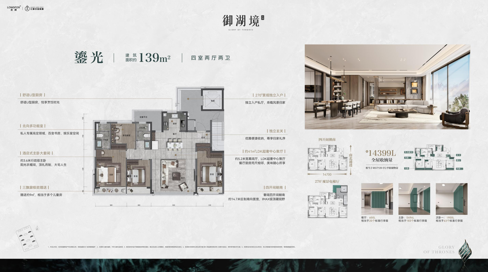
Z2 · 龙湖·滨颂御湖境 D-168（杭州滨江）
| 年份 | 2024-11/12 首开 | 面积 | 约168㎡ |
|---|---|---|---|
| 房型 | 四房两厅三卫 | 厅向 | 南厅 |
| 梯户 | 事实两梯两户（同上） | ||
| 得房率 | 未知未公开 | ||
亮点：楼王位，四开间朝南、南向约 16.3m 采光面；主卧和主卫浴缸都有 270° 观景飘窗。
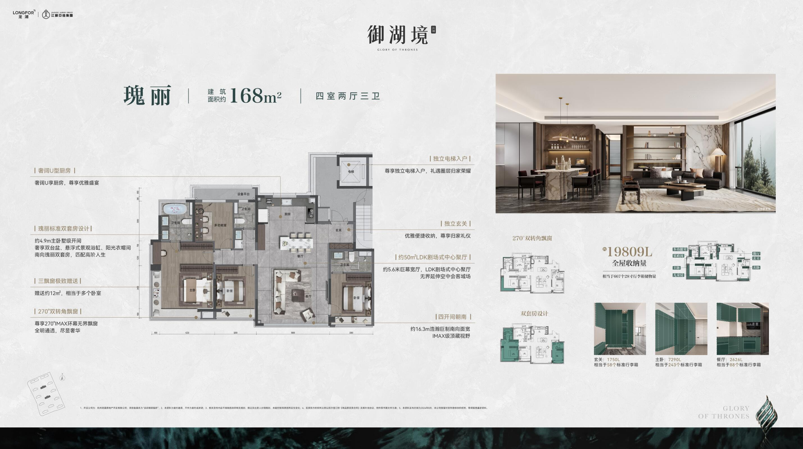
Z3 · 建发·云湖之城 C1-139 边套（杭州（未来科技城））
| 年份 | 2024-06 户型发布 | 面积 | 约139㎡ |
|---|---|---|---|
| 房型 | 四房两厅两卫 | 厅向 | 南厅 |
| 梯户 | 事实139–230㎡ 为 2 梯 2 户（105–120 为 2 梯 4 户）（网易号 2024） | ||
| 得房率 | 未知未公开 | ||
亮点：四开间朝南、三阳台，带储藏间。
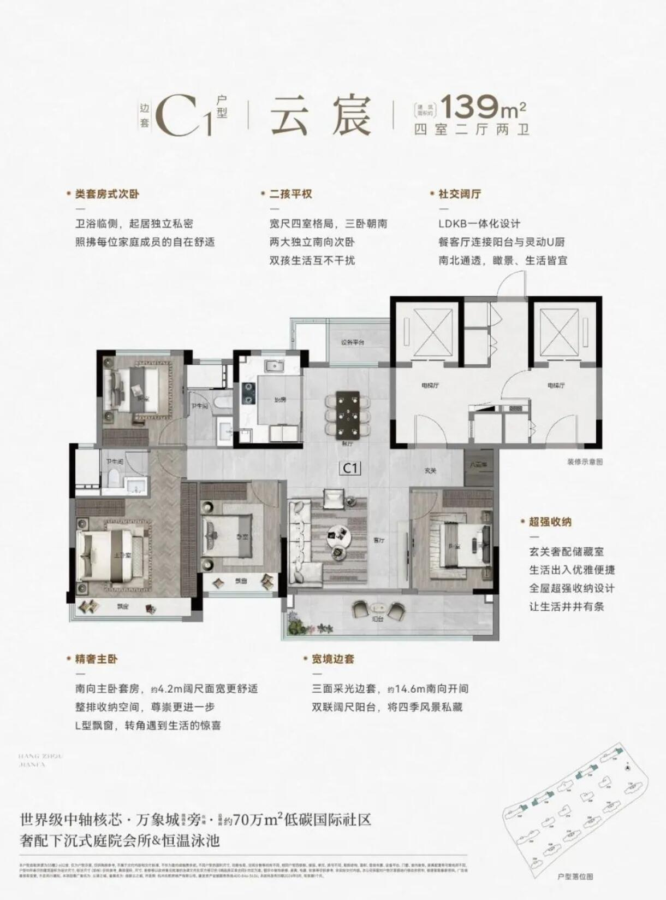
Z4 · 建发·云湖之城 C1-139 中间套（杭州（未来科技城））
| 年份 | 2024-06 | 面积 | 约139㎡ |
|---|---|---|---|
| 房型 | 四房两厅两卫 | 厅向 | 南厅 |
| 梯户 | 事实2 梯 2 户（同上）；看房网户型名标“中间套” | ||
| 得房率 | 未知未公开 | ||
亮点：与 Z3 同面积的中间套版本，可对照边套/中间套差异。
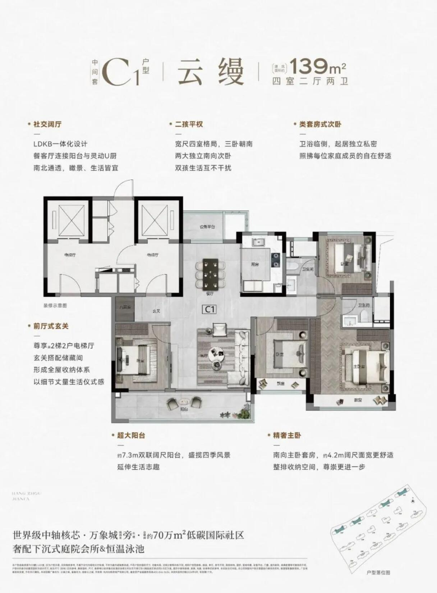
Z5 · 建发·云湖之城 D1-159（杭州（未来科技城））
| 年份 | 2024-06 | 面积 | 约159㎡ |
|---|---|---|---|
| 房型 | 四房两厅三卫 | 厅向 | 南厅 |
| 梯户 | 事实2 梯 2 户（同上） | ||
| 得房率 | 未知未公开 | ||
亮点：双套房，四开间朝南；主卧南北通透带转角飘窗；入户玄关带储藏间。
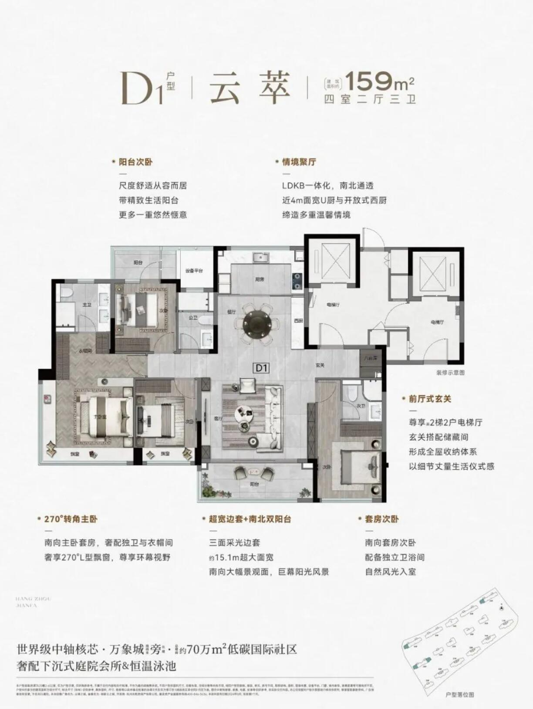
Z6 · 建发·云湖之城 E-173（杭州（未来科技城））
| 年份 | 2024-06 | 面积 | 约173㎡ |
|---|---|---|---|
| 房型 | 四房两厅三卫 | 厅向 | 南厅 |
| 梯户 | 事实2 梯 2 户（同上） | ||
| 得房率 | 未知未公开 | ||
亮点：四开间朝南，南北三个大阳台，双套房，主卧转角飘窗。
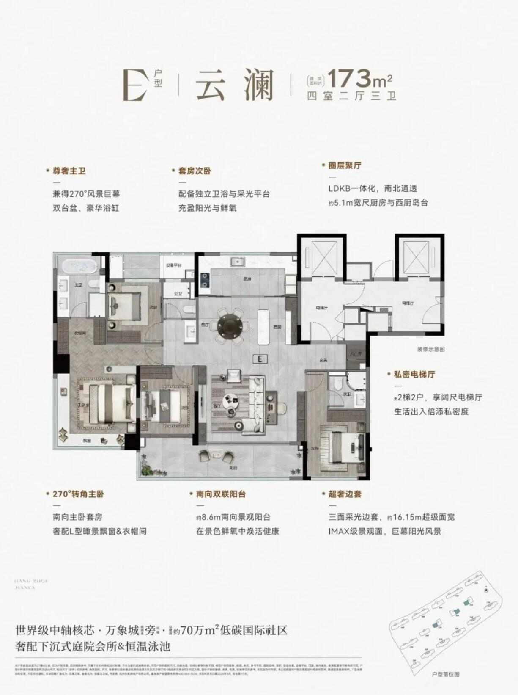
Z7 · 中天海威·璟逸 A1-139（杭州拱墅（华丰））
| 年份 | 2026（7 月在售） | 面积 | 约139㎡ |
|---|---|---|---|
| 房型 | 四房两厅两卫 | 厅向 | 南厅 |
| 梯户 | 事实13–15 层小高层两梯两户，独立私梯前厅，层高 3m（搜狐 2026-07） | ||
| 得房率 | 推断文中称“得房率最高近 95%”（含赠送梯厅），属宣传口径 | ||
亮点：两梯两户独立电梯厅赠送；台地铝板立面。
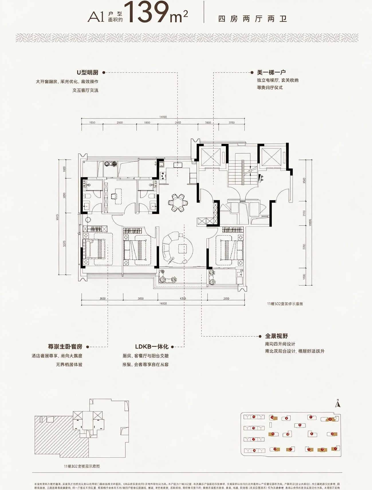
Z8 · 中天海威·璟逸 B1-170（杭州拱墅（华丰））
| 年份 | 2026 | 面积 | 约170㎡ |
|---|---|---|---|
| 房型 | 四房两厅三卫 | 厅向 | 南厅 |
| 梯户 | 事实两梯两户（同上） | ||
| 得房率 | 推断同上（最高近 95%，宣传口径） | ||
亮点：大四房、双套房；与 Z7 同楼型。
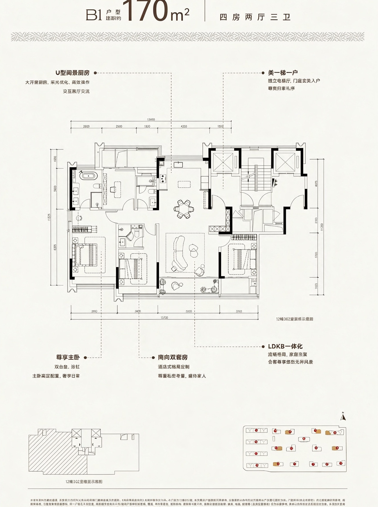
Z9 · 潮语映月轩 A1-159（杭州）
| 年份 | 2024-10 示范区开放 | 面积 | 约159㎡ |
|---|---|---|---|
| 房型 | 四房两厅三卫 | 厅向 | 南厅 |
| 梯户 | 事实12–15F，2T2（看房网楼盘页） | ||
| 得房率 | 未知未公开 | ||
亮点：南向三面宽、双阳台、双套房；全盘 159–233㎡ 纯改善。
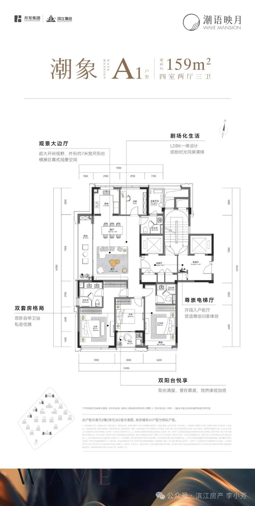
Z10 · 滨江·滨运锦绣里 D2-139（杭州）
| 年份 | 约 2024–2025（推断） | 面积 | 约139㎡ |
|---|---|---|---|
| 房型 | 四房两厅两卫 | 厅向 | 南厅 |
| 梯户 | 未核实 梯户比未找到出处 | ||
| 得房率 | 未知未公开 | ||
亮点：滨江品牌，139 有多个变体（D1–D4）。
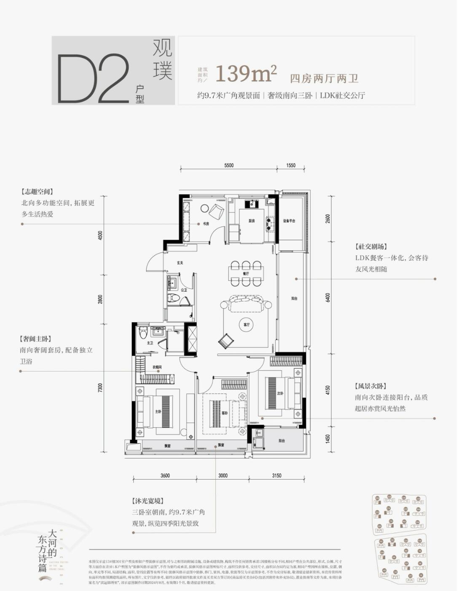
Z11 · 滨江·滨运锦绣里 E1-169（杭州）
| 年份 | 约 2024–2025（推断） | 面积 | 约169㎡ |
|---|---|---|---|
| 房型 | 四房两厅两卫 | 厅向 | 南厅 |
| 梯户 | 未核实 梯户比未找到出处 | ||
| 得房率 | 未知未公开 | ||
亮点：大四房。
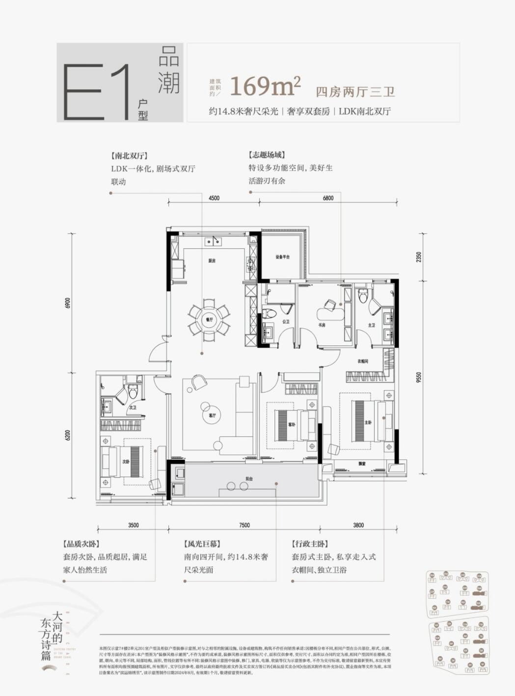
南厅案例（沿用，杭州 2024–2026）
J1 · 滨江·云杭里 A“云舒”（杭）
| 年份 | 2026（预售/加推 2026） | 面积 | 约119㎡ |
|---|---|---|---|
| 房型 | 三房+灵动书房（三房半） | ||
| 梯户 | 事实两梯两户，纯板无连廊，独立电梯前厅（搜狐 2026；看房网问答 2026-03-20） | ||
| 得房率 | 事实约89%（套内约105.8㎡；销售资料转载，网易号） | ||
亮点：U型明厨约7㎡；约6.2m全景边厅转角窗；主卧套房+步入衣帽；南向三卧约9.1m；全明双卫；转角飘窗不计产权

图/户型来源：https://m.kan3721.com/huxing2566-44012.html（2026-03-20）；图右下有小“豆包AI生成”角标（转载站加）
J2 · 绿城·咏湖雲庐 A2“银鞍”（杭（滨江白马湖））
| 年份 | 2025（土地 2024-07，高层 2025 开盘） | 面积 | 约148㎡ |
|---|---|---|---|
| 房型 | 四房两厅两卫 | ||
| 梯户 | 事实小高层两梯两户（看房网点评 2025-02） | ||
| 得房率 | 未核实 | ||
亮点：子母门+独立玄关；约14.2m南向面宽、四开间朝南；宽U型厨；LDK一体；多功能房；层高3.1m；项目FAR 1.76（与龙游接近）

图/户型来源：https://m.kan3721.com/huxing2554-43837.html（2025-02-20）
J3 · 绿城·咏湖雲庐 A1“青衿”（杭（滨江白马湖））
| 年份 | 2025 | 面积 | 约146㎡ |
|---|---|---|---|
| 房型 | 四房两厅两卫 | ||
| 梯户 | 事实小高层两梯两户（同上） | ||
| 得房率 | 未核实 | ||
亮点：三卧朝南；一体化客餐双厅；全景大飘窗；主卧套房+转角观景

图/户型来源：https://m.kan3721.com/huxing2554-43838.html（2025-02-20）
J5 · 中交·荷语江山府 E“观澜”（杭（临平东湖））
| 年份 | 2024–2026（西区2027-12交付） | 面积 | 约168㎡ |
|---|---|---|---|
| 房型 | 四房两厅三卫 | ||
| 梯户 | 事实168–189㎡楼王位于西区16F，一梯两户（网易号售楼资料） | ||
| 得房率 | 约84%–87%（同源，开发商口径）未核实 | ||
亮点：图注“五开间朝南”；双套房；中西厨预置；大横厅

图/户型来源：https://m.kan3721.com/huxing2543-43649.html（2024-09-20）
J6 · 和萃·揽悦园 H“观萃”（杭（临平））
| 年份 | 2025（2025-11/12 开盘） | 面积 | 约168㎡ |
|---|---|---|---|
| 房型 | 四室两厅三卫 | ||
| 梯户 | 事实139南厅与168户型为两梯两户小高层（网易号） | ||
| 得房率 | 项目口径约83%未核实 | ||
亮点：主卫浴缸+双台盆；约34㎡奢阔聚场；双套房；约16m南向面宽；约8.55m双联阳台；收纳约25,540L

图/户型来源：https://m.kan3721.com/huxing2560-43933.html（2025-03-01）
J7 · 绿城·咏湖雲庐 B“轻裘”（杭（滨江白马湖））
| 年份 | 2025（二开 2025-02） | 面积 | 约170㎡ |
|---|---|---|---|
| 房型 | 四房两厅三卫 | ||
| 梯户 | 事实小高层两梯两户（宣传称“类一梯一户”，即两梯两户分设梯厅） | ||
| 得房率 | 未核实 | ||
亮点：子母门+独立玄关；约7.35m大方厅融合U厨/岛台/餐客；主卧面宽约3.9m套房，双台盆+浴缸；北书房3.2m；双卧套房
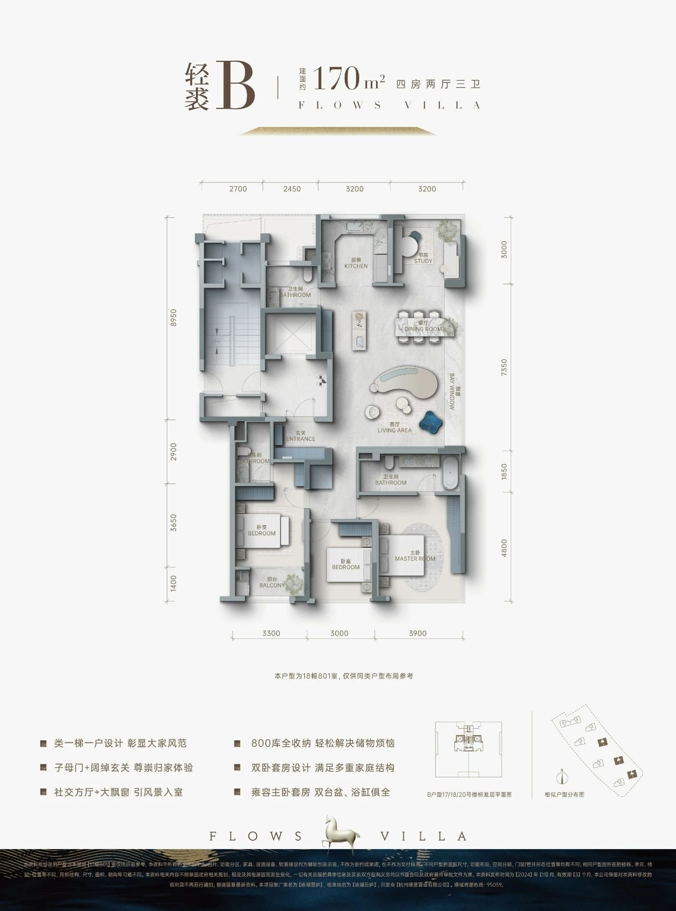
图/户型来源：https://m.kan3721.com/huxing2554-43836.html（2025-02-20）
北厅案例（项目北侧衢江江景参考）
N2–N7 梯户比未核实；N1b 是湖翠里北排中间套（南厅），与边套 N1 对照。
N1 · 滨江·湖翠里 D-166（杭州钱塘·金沙湖）
| 年份 | 2023（早于 2024–2026 偏好，作参考） | 面积 | 约166㎡ |
|---|---|---|---|
| 房型 | 四房两厅三卫，北厅 + 四开间朝南 | ||
| 梯户 | 事实项目 5 幢均为两梯两户；北侧沿湖只布置 138㎡ 和 166㎡（搜狐 2023-02） | ||
| 得房率 | 事实看房网标注约 85%（含赠送），套内约 141.8㎡ | ||
亮点：客餐厅放在北侧转角，正面朝金沙湖；四个卧室全部朝南；位于 6 号楼东西边套，评测建议选东边套、7–8 层以上（房叔跑盘 No.119）。
为什么适合北侧江景：推断这是“卧室朝南拿日照、客厅朝北拿景”的标准解法，和龙游北临衢江的条件一致，可以直接作为北排楼栋的原型。
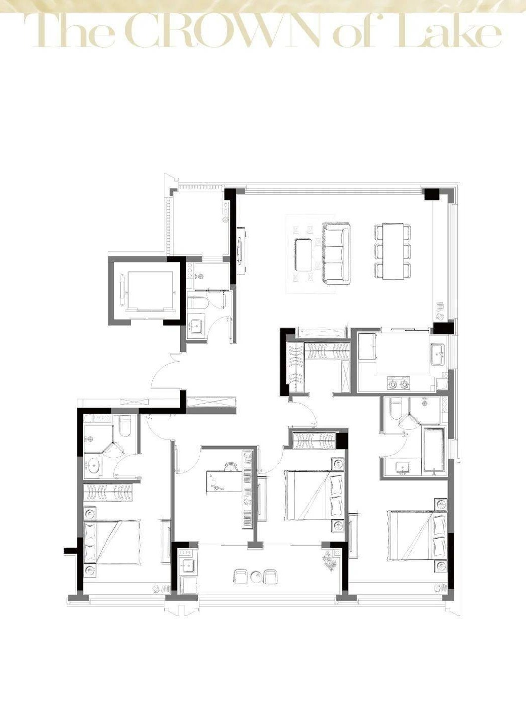
图来源：https://www.sohu.com/a/635511927_667411（2023-02）；同文 C-138 为南厅，B1-130 为中厅；C-138 即下方 N1b 中间套
N1b · 滨江·湖翠里 C-138 中间套（与 N1 同楼，北排中间两户）
| 年份 | 2023 | 面积 | 约138㎡ |
|---|---|---|---|
| 位置 | 事实图右下角位置图中 7、6、5 号楼的中间两户被标色（边套即 N1 D-166） | ||
| 朝向 | 事实按图中指北针（上为北）：北侧为卧室、厨房和书房，客厅和阳台在南侧，不是北厅（是南厅中间套） | ||
| 梯户 | 事实两梯两户（与 N1 同一来源） | ||
| 得房率 | 未知 | ||
推断湖翠里只把北侧湖景客厅给了边套；中间套靠卧室和书房看湖。龙游北排楼如果中间套也想做北厅，需要另找原型（见下方 N2/N3 的位置说明）。

图来源：https://www.sohu.com/a/635511927_667411（2023-01-30）
N2 · 滨江·春风金沙 C1-141（杭州钱塘·金沙湖）
| 年份 | 2019 设计 / 2023 竣工 | 面积 | 约141㎡ |
|---|---|---|---|
| 房型 | 北向宽厅 + 卧室朝南（7幢2单元501，按图）；未核实是不是中间套：图上位置图分辨率太低，看不清 | ||
| 梯户 | 未核实 梯户比未核实（楼盘为高端改善，暂按“可能”收录） | ||
| 得房率 | 事实看房网标注 84%（含赠送），套内约 118㎡ | ||
亮点：北侧湖景宽厅、一步阳台。事实ARCHINA 写明“沿湖楼栋户型采用北向宽厅设计，住户享有北侧湖景与南侧花园”（goa 设计，2019 设计 / 2023 竣工，ARCHINA）
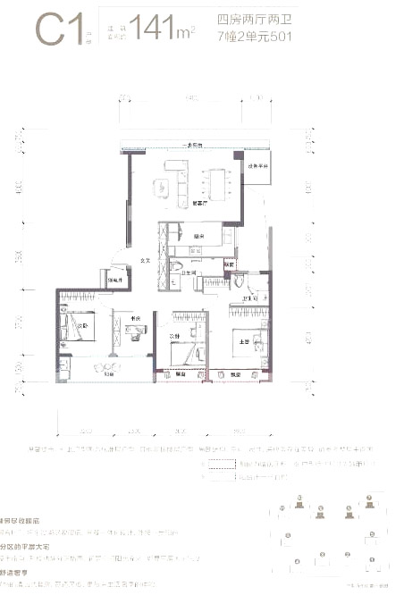
N3 · 滨江·春风金沙 C2-141（杭州钱塘·金沙湖）
| 年份 | 2019 设计 / 2023 竣工 | 面积 | 约141㎡ |
|---|---|---|---|
| 房型 | 北向宽厅 + 卧室朝南（7幢1单元501） | ||
| 梯户 | 未核实 梯户比未核实 | ||
| 得房率 | 事实看房网标注 82%（含赠送），套内约 115.6㎡ | ||
亮点：与 C1 镜像/边套变体。事实ARCHINA 写明“沿湖楼栋户型采用北向宽厅设计，住户享有北侧湖景与南侧花园”（goa 设计，2019 设计 / 2023 竣工，ARCHINA）

N4 · 建发·望江 143㎡ B 户型（温州滨江CBD·瓯江）
| 年份 | 2025–2026 在售 | 面积 | 约143㎡ |
|---|---|---|---|
| 房型 | 四室两厅三卫，北侧瞰景方厅，南向双主套 | ||
| 梯户 | 未核实 官网称“T2 改善”，单元梯户比未核实 | ||
| 得房率 | 未知文中“约113%利用率”是含赠送的使用率，不是得房率 | ||
亮点：事实文中写“东南北三面瞰瓯江”“约 270° 环幕观景”（搜狐 2026-04-21）；约 11m 一线江景面、中西双厨。

图来源：https://www.sohu.com/a/1012271524_121680073（2026-04-21）
N5 · 建发·望江 143㎡ D 户型（温州滨江CBD·瓯江）
| 年份 | 2025–2026 在售 | 面积 | 约143㎡ |
|---|---|---|---|
| 房型 | 四室两厅三卫，北侧转角方厅，南向双主套 | ||
| 梯户 | 未核实 同上 | ||
| 得房率 | 未知（约113%为使用率） | ||
亮点：事实文中写“东南北三面瞰瓯江”“约 270° 环幕观景”（搜狐 2026-04-21）；约 270° 转角观江。

N6 · 新希望·玉锦麟 159㎡（温州·瓯江）
| 年份 | 约 2020 物料 | 面积 | 约159㎡ |
|---|---|---|---|
| 房型 | 三房（图示）+ 北侧客餐厅一体，卧室朝南 | ||
| 梯户 | 未核实 梯户比未核实（图中一梯可见一部电梯 + 楼梯，非完整核心筒） | ||
| 得房率 | 未知 | ||
亮点：事实吉屋写“北面餐厅、客厅观景设计”（吉屋）；面宽约 9.8m（网易）。

N7 · 滨江·春风金沙 D-165（杭州钱塘·金沙湖）
| 年份 | 2019 设计 / 2023 竣工 | 面积 | 约165㎡ |
|---|---|---|---|
| 房型 | 北向宽厅 + 卧室朝南（7幢2单元502） | ||
| 梯户 | 未核实 梯户比未核实 | ||
| 得房率 | 事实看房网标注 80%（含赠送），套内约 132.4㎡ | ||
亮点：北侧湖景宽厅，客厅 270° L 形转角窗。事实ARCHINA 写明“沿湖楼栋户型采用北向宽厅设计，住户享有北侧湖景与南侧花园”（goa 设计，2019 设计 / 2023 竣工，ARCHINA）
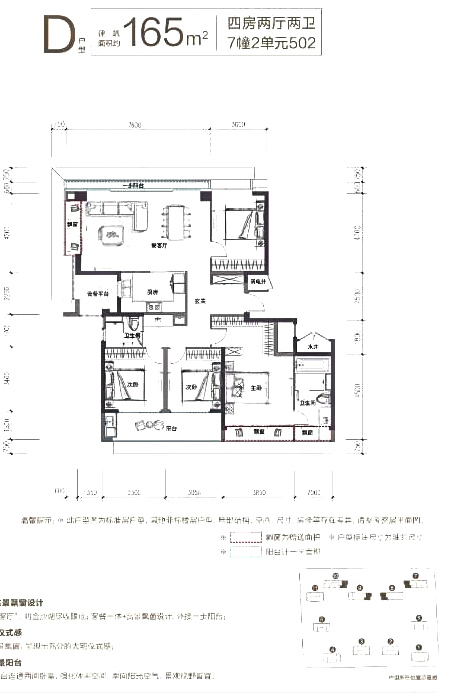
线索（未通过：梯户比未核实、年份偏早或缺图）
| 编号 | 项目/户型 | 城市 | 北厅/江景要点 | 为什么未收录 |
|---|---|---|---|---|
| L1 | 中铁建·西派澜廷 127㎡（2025 首开） | 温州鹿城·一线瓯江 | 事实北厅约48㎡，面宽7.35m，三卧朝南（网易 2025） | 项目只写“高梯户比”（温州楼盘网），未核实具体梯户；网易图片被剥离。130 段最接近的一条线索 |
| L3 | 华鸿·天悦外滩 143㎡（E2/E6） | 台州椒江 | 事实朝南三卧，一体化餐客北厅，双联瞰景阳台（台州城市网 2025-04-29） | 梯户比未核实；项目首开约 2021 |
建议L1 和 L3 可以让当地渠道或售楼处补问梯户比和户型图，核实后升为正式案例。
本版移出（不在浙江或超出 120–180㎡）
- J4 招商·臻和璟园 143（苏州，非浙江）
- 原 N8/N9 建发望江 185（超出 180㎡）
- 保利·天奕 175：资料写一梯一户/类一梯一户，不是 1T2/2T2
- 建发·云涌之江 160：一梯一户；其 129/139 梯户比未找到
- 龙湖滨颂 107、云湖之城 105/120：2T3 或 2T4，且不在面积段
剔除清单 · 缺口 · 来源
缺口
- 120–130㎡ 两梯两户：只有 J1（119）。
- 宁波、绍兴、嘉兴、湖州、金华、台州、衢州：本轮没找到同时有梯户出处和户型图的 2024–2026 案例；温州只有北厅参考。
- 新增案例得房率大多未公开。
剔除清单（含原因）
| 项目 | 城市 | 剔除原因 |
|---|---|---|
| 滨江兴耀·鸣澜里 120/126 | 杭 | 中小户型两梯四户；只有 139 边套是两梯两户 来源 |
| 滨江·云杭里 B2 127 | 杭 | 两梯三户，中间套北侧有连廊（139/159 为一梯一户，也不在本次范围） 来源 |
| 建发·云栖上宸 121/130 | 杭 | 项目为 2T4 + 2T2，无法确认具体户型属哪种 来源 |
| 中交·荷语江山府 C-129 | 杭 | 两梯四户为主流 来源 |
| 和萃·揽悦园 E-128 | 杭 | 只有 139 南厅/168 证实为两梯两户，128 未证实 |
| 龙湖·滨颂御湖境 D-168 | 杭 | 项目为 2梯2户 + 2梯3户，无法确认 168 属哪种 来源 |
| 建杭·璞御栖湖 E-169 | 杭 | 只写“类一梯一户/独立电梯厅”，具体梯户比未披露 来源 |
| 兴耀·沐云川 D-145 | 杭 | 所在 10 号楼单元 26 层 75 户，不可能是两梯两户 来源 |
| 建发·云城之上 B2-119 | 杭 | 图上能看到两梯，但每层户数未披露 |
| 保利·云珹瑧悦府 130 | 杭 | 只有 160 写明两梯两户，130 未披露 |
| 保利·虹桥和著四期 128 | 沪 | 只写“类一梯一户”（约94%），原文与图片都抓不到，未核实 |
| 大华·星曜华庭 135 | 沪 | 搜索摘要称一梯两户，但原文 404、无图，未能核实 |
| 中北金基·璞悦隽园 116 三房 | 宁 | 两梯两户，但页面无合格图、无书房信息 |
| 成都 9 例 | 蓉 | 按 2026-10-30 反馈移出，存档在 _archive-成都/ |
图片说明
户型图转载自杭州看房网（kan3721.com）、搜狐、吉屋转载的开发商销售物料，日期为图片上传日期（从文件名推断）。仅作内部设计参考。